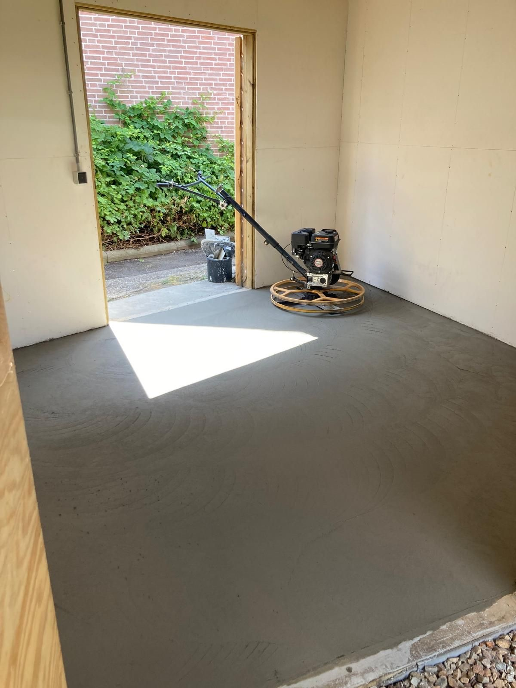

01 Meest gevraagdBetonvloeren
Gestort, geëgaliseerd en machinaal gevlinderd tot een vlakke, gladde vloer. Garages, schuren, terrassen en bedrijfsvloeren, inclusief isolatie, wapening en vloerverwarming. Een vloer tot circa 30 m² ligt er meestal in één dag.
Meer over betonvloeren →